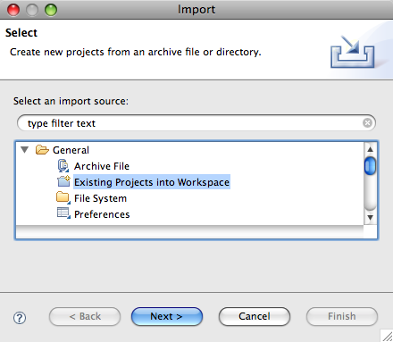
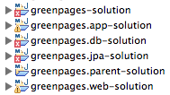
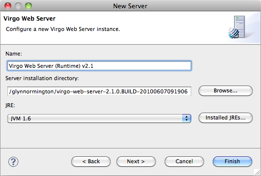
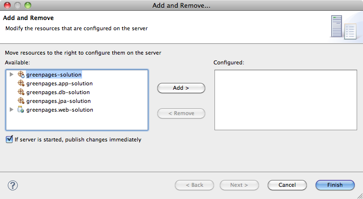
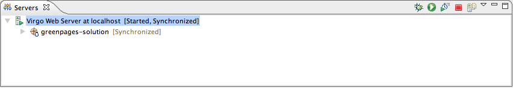

Abstract
Spring application programmers are introduced to Virgo by installing the Virgo Tomcat Server and building and running a small application called GreenPages.
Despite its simplicity, GreenPages is designed to demonstrate many different Virgo features and to act as a template from which other modular applications can be built. This guide highlights areas of interest in the sample code.
This version of the guide is based on the following software versions:
| GreenPages Sample | 2.4.0.RELEASE | |
| Virgo Tomcat Server | 3.0.0.RELEASE | |
| Apache Maven | 2.2.0 |
Copyright © 2011 VMware Inc.
All rights reserved. This document is made available under the terms of the Eclipse Public License v1.0 which is available at http://www.eclipse.org/legal/epl-v10.html.
Java, Sun, and Sun Microsystems are trademarks or registered trademarks of Sun Microsystems, Inc. in the United States and other countries.
OSGi is a trademark or a registered trademark of the OSGi Alliance in the United States, other countries, or both.
Eclipse is a trademark of Eclipse Foundation, Inc.
UNIX is a registered trademark of The Open Group.
Windows is a registered trademark of Microsoft Corporation in the United States and other countries.
Table of Contents
Before building and running the GreenPages sample, it is essential to install a JDK, Virgo Tomcat Server and Apache Maven.
Before proceeding, ensure that a Java™ Standard Edition Development Kit (JDK)
for Java 6 or later is installed and that the JAVA_HOME environment variable
is set to the root directory of the JDK.
(A Java Runtime Environment (JRE) alone is not sufficient for building the sample.)
Unzip the Virgo Tomcat Server Zip file. Ensure the destination path does not contain spaces. On Windows™ operating systems, ensure you unzip this near the root of a drive to avoid issues with long path names.
Please refer to the Virgo User Guide for full installation instructions. See Documentation.
This is necessary only if you would like to run the sample under Eclipse.
Please refer to the Virgo Programmer Guide for installation instructions. See Documentation.
Apache Maven, or Maven for short, is a software project management and comprehension tool
which uses a central Project Object Model (POM) to manage a project’s build, reporting
and documentation generation. POM files (pom.xml) are included in the projects for
GreenPages.
To install Maven, visit the Maven website (http://maven.apache.org)
and follow the download instructions from there.
This document has been written and tested with Maven version 2.2.0. The rest of the document
assumes that Maven
commands (mvn …) are available from the command line.
GreenPages is a simple application that allows users to search an online email address directory. Each listing in the directory details the relevant email addresses and the name of the owner. GreenPages has only three screens: the search screen, the results screen and the listing detail screen.
In the search screen, users can enter search criteria to be matched against the listings in the directory. The result screen displays any listings that match the criteria entered by the user. The listing detail screen shows all the data known about a given listing.
Despite its simplicity, GreenPages is designed to demonstrate many different Virgo Tomcat Server features and to act as a template from which other modular applications can be built. In particular, GreenPages demonstrates:
bundle dependencies with
Import-Package,load-time weaving with JPA and AspectJ,
bundle classpath scanning, and
service export, lookup and injection.
In addition to demonstrating common Virgo Tomcat Server features, GreenPages demonstrates integration with:
Spring Framework 3.0;
FreeMarker 2.3;
EclipseLink 1.0.0;
H2 1.0.71; and
Commons DBCP 1.2.2.
The GreenPages application is packaged as a PAR file containing four bundles.
 |
The greenpages.db bundle provides access to an external database and publishes a
javax.sql.DataSource service.
The greenpages.app bundle exports a greenpages package containing
Directory and Listing interfaces.
The greenpages.jpa bundle imports the greenpages package and
uses the javax.sql.DataSource service to
access the external database and publishes its contents as a greenpages.Directory service.
The greenpages.web web application bundle imports the greenpages package and uses the
greenpages.Directory service to respond to web requests.
This document provides instructions for building the complete GreenPages application and running it in Virgo Tomcat Server.
To get the completed GreenPages application, including tests and explanatory skeleton parts:
download the latest Zip file from
http://eclipse.org/virgo/download/
extract all the files from the Zip file to a convenient directory (preserving the directory structure).
To extract the files on Windows:
prompt> mkdir c:\springsource\samples prompt> cd c:\springsource\samples prompt> jar xf c:\path\to\greenpages-2.4.0.RELEASE.zip prompt> set GREENPAGES_HOME=c:\springsource\samples\greenpages-2.4.0.RELEASE
To extract the files on Unix systems:
prompt$ mkdir -p /opt/springsource/samples prompt$ cd /opt/springsource/samples prompt$ unzip /path/to/greenpages-2.4.0.RELEASE.zip prompt$ export GREENPAGES_HOME=/opt/springsource/samples/greenpages-2.4.0.RELEASE
The environment variable GREENPAGES_HOME set here is not used by the projects, but is used as a shorthand
in the instructions that follow.
The GreenPages Zip file contains two main directories called solution and start.
The solution directory contains the completed application which can be built and tested (as described in the next section).
The start directory, which is ignored by this guide, contains an initial skeleton of the GreenPages application which
could be used to generate the full application.
GreenPages uses Apache Maven as its primary build system. Each bundle of the application can be built separately and the entire application can built and assembled into a PAR file from a single location. To build the application and assemble it into a PAR file:
Make
$GREENPAGES_HOME/solutionthe current directory.Run the command
mvn package. The first time this is run several files will be downloaded from Maven repositories. Subsequent runs will not need to do this.Verify that the
greenpages-2.4.0.RELEASE.parfile exists in$GREENPAGES_HOME/solution/greenpages/target.
Unlike traditional Java EE applications, GreenPages does not package all of its dependencies inside its deployment unit. Instead, it relies on the mechanisms of OSGi to locate its dependencies at runtime. When running an OSGi application on Virgo Tomcat Server, these dependencies can be loaded into memory as needed, but first they must be made available to Virgo Tomcat Server.
The Maven build included with GreenPages uses the dependency:copy-dependencies plugin to gather
all the artifacts that GreenPages depends on that are not supplied by the Virgo Tomcat Server runtime. These dependencies
can then be installed into the Virgo Tomcat Server repository. Dependencies are gathered automatically during the
package phase. These dependencies can be found in
$GREENPAGES_HOME/solution/greenpages/target/par-provided. To install dependencies
simply copy all the *.jar files from this directory into $SERVER_HOME/repository/usr
(where $SERVER_HOME is the Virgo Tomcat Server installation directory).
Installing dependencies on Windows:
prompt> cd %GREENPAGES_HOME%\solution\greenpages prompt> copy target\par-provided\* %SERVER_HOME%\repository\usr
Installing dependencies on UNIX:
prompt$ cd $GREENPAGES_HOME/solution/greenpages prompt$ cp target/par-provided/* $SERVER_HOME/repository/usr
Notice that Virgo Tomcat Server will not necessarily see these dependencies unless its repository indexes are rebuilt.
Different repositories behave differently in this respect; some are passive (their indexes are built only once upon startup)
and some are active (they can detect new files or files being removed dynamically).
The usr repository is active so there is no
need to restart Virgo Tomcat Server when copying these files.
The next time Virgo Tomcat Server is started the -clean option will cause Virgo Tomcat Server to re-scan the repository directories in any case.
It is always safe to start Virgo Tomcat Server with the -clean option.
GreenPages uses the H2 database to store all its data. Before starting the application, start the database server and populate the database with data.
Change to the
$GREENPAGES_HOME/dbcurrent directory. On Unix:prompt$ cd $GREENPAGES_HOME/db
On Windows:
prompt> cd %GREENPAGES_HOME%\db
Run the database startup script appropriate to the operating system. For Unix, this is
run.sh, run in the background:prompt$ sh run.sh &
Press Return to continue.
On Windows, run the
run.batcommand:prompt> run
For both platforms, the command might invoke a browser window offering a connection to the database; close this window.
Run the data population script appropriate to the operating system. For Unix, this is
data.sh:prompt$ sh data.sh
On Windows, run the
data.batcommand:prompt> data
Run these commands once to start a database server for H2; the server will continue to run in the background.
To install the GreenPages PAR into Virgo Tomcat Server and start it:
Copy the GreenPages PAR to the
$SERVER_HOME/pickupdirectory. On Unix:prompt$ cd $SERVER_HOME prompt$ cp $GREENPAGES_HOME/solution/greenpages/target/greenpages-solution-2.4.0.RELEASE.par pickup/
On Windows:
prompt> cd %SERVER_HOME% prompt> copy %GREENPAGES_HOME%\solution\greenpages\target\greenpages-solution-2.4.0.RELEASE.par pickup\
Start Virgo Tomcat Server with the
-cleanoption. On Unix:prompt$ $SERVER_HOME/bin/startup.sh -clean
On Windows:
prompt> "%SERVER_HOME%"\bin\startup.bat -clean
Verify that GreenPages starts correctly by checking in the Virgo Tomcat Server output for the log message:
<DE0005I> Started par 'greenpages' version '2.4.0.RELEASE'.
Once installed and started, the GreenPages application can be accessed with a web browser using the address http://localhost:8080/greenpages.
From the home page, a search query can be entered into the search box:
After entering a query into the search box, the results page shows all the matches from the directory:
Clicking on view, next to an entry in the search listing, displays the full details for that listing entry:

Using Eclipse and the Virgo Tomcat Server tools, it is possible to run applications directly from the IDE. As changes are made to the application in the IDE, they can be automatically applied to the running application allowing for rapid feedback of changes in function.
Before starting the GreenPages application from Eclipse, import the projects:
Open the Import Wizard using → .
From the Import Wizard select → and click Next:
Click and select
$GREENPAGES_HOME/solutionas the root directory.In the Import Projects window, select all the projects and click Finish:

Validate that the imported projects appear in Package Explorer:
There may be compilation errors at this stage.
Projects for Virgo Tomcat Server are associated with a Virgo Virgo Tomcat Server runtime environment in Eclipse. This is to allow launching and testing from within Eclipse, and also to allow classpath construction in Eclipse to mirror the dynamic classpath in the Virgo Tomcat Server runtime.
Compilation errors in the previous step will be resolved here.
To configure a Virgo Tomcat Server runtime environment:
Open → → .
In the Show View dialog choose → to make the servers view visible:

Right-click in the Servers (which may not be empty) view and select → .
In the New Server dialog, choose → and click Next.
Click and select the
$SERVER_HOMEdirectory. Ensure that a JRE is selected supporting Java 1.6 or above. Click to complete creation of the server:Select all projects (except Servers) in Package Explorer. Right-click on the projects and choose and then .
It is possible that there remain spurious build errors from Eclipse (see the Problems view), in which case a project clean build may clear the problems. Select → from the main menu, and choose to Clean all projects. It may be necessary to repeat this on a few projects. (This process is sometimes known as the “Eclipse dance”.)
Despite the dance steps outlined, there will remain some Warnings like this:
It is safe to ignore these.
When the Virgo Tooling starts the Virgo Tomcat Server it uses a ‘warm start’ by default.
It is useful to set the -clean option so that every server start is a clean one.
This is done by an option on the Virgo Tomcat Server Overview window, which is obtained by opening the Virgo Tomcat Server entry in the Servers window.
(Double-click, or right-click and choose Open.)
The check box is labelled ‘Start server with -clean option’.
Close the window before proceeding.
Now that GreenPages is successfully imported into Eclipse, run the project directly from within the IDE.
If the GreenPages PAR file was previously copied to the pickup directory, be sure it is now removed so that
it does not conflict with the deployment of the Eclipse project. On Unix:
prompt$ cd $SERVER_HOME/pickup prompt$ rm greenpages-solution-2.4.0.RELEASE.par
On Windows:
prompt> cd %SERVER_HOME%\pickup prompt> del greenpages-solution-2.4.0.RELEASE.par
Also, to prevent conflicts with the server configured in Eclipse, stop a currently-running Virgo Tomcat Server by typing Control-C in the console window.
To run GreenPages from within Eclipse:
Right click on the Virgo Tomcat Server instance in the Servers view and select the menu item.
Add greenpages-solution (which is the containing project or PAR) to the server and finish.
To start Virgo Tomcat Server from within Eclipse right-click on the Virgo Tomcat Server node in the Servers window and choose . The Servers view should now show the server and the added project:
Verify that GreenPages is started correctly by checking for:
<DE0005I> Started par 'greenpages' version '2.4.0.RELEASE'.
in the Console window.
(If errors are shown implying that GreenPages failed to be installed, this may be because some dependencies were not copied to Virgo Tomcat Server, as described in the section called “Installing Dependencies into Virgo Tomcat Server”. Check this.)
Once installed and started GreenPages is again available from a web browser at the address http://localhost:8080/greenpages.
This chapter picks out some notable features of the GreenPages sample code from the solution folder.
The GreenPages Web Application Bundle (WAB) is built using Spring MVC configured with Spring annotations and component scanning. The Bundlor tool is used to generate the bundle manifest of the WAB and a service is injected into the code using Spring DM in combination with Spring autowiring.
For more information on Spring, Spring MVC, Bundlor and Spring DM, please see Projects..
The web deployment descriptor file web.xml is in the src/main/webapp/WEB_INF folder of the
greenpages.web project.
It defines a servlet, a servlet context parameter, and a servlet context listener.
Spring's dispatcher servlet is used to dispatch web requests to handlers.
<servlet> <servlet-name>greenpages</servlet-name> <servlet-class>org.springframework.web.servlet.DispatcherServlet</servlet-class> </servlet>
The contextClass servlet parameter declares the implementation of WebApplicationContext
that Spring instantiates.
The application context acts as a root application context and each servlet in the web application, which in the case of GreenPages is
just the dispatcher servlet, has its own application context which is a child of the root application context.
ServerOsgiBundleXmlWebApplicationContext is provided by Virgo and will hold beans created by Spring DM, which
are then available in child application contexts.
<context-param>
<param-name>contextClass</param-name>
<param-value>org.eclipse.virgo.web.dm.ServerOsgiBundleXmlWebApplicationContext</param-value>
</context-param>
A servlet context listener is defined which will start up the root application context for the web application when the servlet context is initialised.
<listener>
<listener-class>org.springframework.web.context.ContextLoaderListener</listener-class>
</listener>
In the src/main/java source folder of the greenpages.web project
the package greenpages.web
contains the controller class GreenPagesController.
Spring annotations are used to add web behaviour to the class.
The @Controller annotation tells Spring that the class serves the role of a controller and that the
class should be scanned for request mappings.
Request mappings are defined using the @RequestMapping annotation.
For instance, the URL /home.htm is mapped to the handler method home.
@Controller public class GreenPagesController { … @RequestMapping("/home.htm") public void home() { } …
Note that request mappings can also be specified at the class level.
Spring will detect the @Controller annotation and create a bean of type controller,
provided that it scans the classpath for these.
Spring’s component scanning is enabled by the presence of a context tag
in one of the Spring bean definition files.
The WEB-INF/greenpages-servlet.xml file in the
src/main/webapp folder contains the following lines:
<!-- enable classpath scanning --> <context:component-scan base-package="greenpages.web" />
Notice the convention embodied in the filename WEB-INF/greenpages-servlet.xml.
During dispatcher servlet initialisation, Spring looks for a file named [servlet-name]-servlet.xml
in the WEB-INF directory of the web application and creates the beans defined there.
The Virgo Tomcat Server has special support for WABs.
To take advantage of this support, the greenpages.web bundle must be declared to be a WAB and a
context path must be defined.
The Bundlor template (the file template.mf at the top level under the greenpages.web project)
is input to the Bundlor tool which generates the manifest of the bundle.
The Bundlor template defines the context path as follows (and this is what declares the bundle to be a WAB):
Web-ContextPath: greenpages
The Bundlor template also ensures Spring packages and greenpages packages from other bundles are imported with suitable version ranges:
Import-Template: org.springframework.*;version="[3.0, 3.1)", greenpages.*;version="[2.3, 2.4)"
The file webapp/WEB-INF/applicationContext.xml declares a reference to a
greenpages.Directory service in the service registry using Spring DM as follows:
<osgi:reference id="directory" interface="greenpages.Directory"/>
The resultant bean resides in the root web application context.
The GreenPagesController class uses Spring autowiring to inject the service:
@Autowired
private Directory directory;
The controller's bean resides in the web application context associated with the Spring dispatcher servlet and so has access to the directory service bean in the root web application context.
In the middle tier of GreenPages, the DataSource bundle greenpages.db constructs a DataSource and
publishes it in the service registry and the JPA bundle greenpages.jpa uses the datasource to define a JPA entity manager
which provides an object-relational mapping between directory listings and the database.
The JPA bundle also uses declarative transaction management to ensure its persistence operations are performed inside transactions.
The file src/main/resources/META-INF/spring/module-context.xml in the greenpages.db project
declares the Spring p-namespace:
<beans xmlns="http://www.springframework.org/schema/beans" xmlns:xsi="http://www.w3.org/2001/XMLSchema-instance" xsi:schemaLocation="http://www.springframework.org/schema/beans http://www.springframework.org/schema/beans/spring-beans.xsd" xmlns:p="http://www.springframework.org/schema/p">
which is then used to define properties of a datasource bean:
<bean id="dataSource" class="org.apache.commons.dbcp.BasicDataSource" p:driverClassName="org.h2.Driver" p:url="jdbc:h2:~/greenpages-db/greenpages" p:username="greenpages" p:password="pass" init-method="createDataSource" destroy-method="close"/>
The file src/main/resources/META-INF/spring/osgi-context.xml publishes the datasource bean as a service in the
service registry using Spring DM:
<osgi:service ref="dataSource" interface="javax.sql.DataSource"/>
The greenpages.jpa.JpaDirectory class in the folder src/main/java of the
greenpages.jpa project uses the @Repository annotation to make it eligible for Spring DataAccessException translation
(which abstracts implementation-specific persistence exceptions to protect the application from details of the persistence implementation):
@Repository final class JpaDirectory implements Directory {
and also declares an entity manager which will be injected by Spring:
@PersistenceContext
private EntityManager em;
The file src/main/resources/META-INF/spring/module-context.xml in the greenpages.jpa project
declares an entity manager factory based on EclipseLink JPA:
<bean id="entityManagerFactory" class="org.springframework.orm.jpa.LocalContainerEntityManagerFactoryBean" p:dataSource-ref="dataSource"> <property name="jpaVendorAdapter"> <bean id="jpaVendorAdapter" class="org.springframework.orm.jpa.vendor.EclipseLinkJpaVendorAdapter" p:databasePlatform="org.eclipse.persistence.platform.database.HSQLPlatform" p:showSql="true"/> </property> </bean>
The same file enables scanning for annotations, including @PersistenceContext:
<context:annotation-config/>
enables load-time weaving, which is needed by the entity manager factory:
<context:load-time-weaver aspectj-weaving="on"/>
and specifies a bean post processor to perform exception translation for @Repository classes:
<bean class="org.springframework.dao.annotation.PersistenceExceptionTranslationPostProcessor"/>
The file src/main/resources/META-INF/persistence.xml defines a persistence unit for a JpaListing
directory listing class.
<persistence xmlns="http://java.sun.com/xml/ns/persistence" xmlns:xsi="http://www.w3.org/2001/XMLSchema-instance" xsi:schemaLocation="http://java.sun.com/xml/ns/persistence http://java.sun.com/xml/ns/persistence/persistence_1_0.xsd" version="1.0"> <persistence-unit name="GreenPages" transaction-type="RESOURCE_LOCAL"> <class>greenpages.jpa.JpaListing</class> </persistence-unit> </persistence>
The file src/main/resources/META-INF/orm.xml defines an entity mapping for the JpaListing class.
<entity-mappings xmlns="http://java.sun.com/xml/ns/persistence/orm" xmlns:xsi="http://www.w3.org/2001/XMLSchema-instance" xsi:schemaLocation="http://java.sun.com/xml/ns/persistence/orm http://java.sun.com/xml/ns/persistence/orm_1_0.xsd" version="1.0"> <package>greenpages.jpa</package> <entity class="greenpages.jpa.JpaListing" name="Listing"> <table name="LISTING"/> <attributes> <id name="listingNumber"> <column name="LISTING_NUMBER"/> <generated-value strategy="TABLE"/> </id> <basic name="firstName"> <column name="FIRST_NAME"/> </basic> … </attributes> </entity> </entity-mappings>
The greenpages.jpa.JpaDirectory class in the folder src/main/java of the
greenpages.jpa project uses the @Transactional annotation to provide transaction demarcation
(beginning and committing a transaction around each method in this case):
@Transactional … final class JpaDirectory implements Directory {
The file src/main/resources/META-INF/spring/module-context.xml enables AspectJ weaving for transaction demarcation:
<tx:annotation-driven mode="aspectj"/>
and specifies that the Spring JpaTransactionManager should be used and associated with the entity manager factory:
<bean id="transactionManager" class="org.springframework.orm.jpa.JpaTransactionManager" p:entityManagerFactory-ref="entityManagerFactory"/>
Testing is one of the most important aspects of software development. Without testing it would be difficult to determine if a piece of code worked properly, changes would have undetected consequences, and the quality of the code would generally be lower.
There are two major categories of testing generally recognised today: unit testing and integration testing. In the context of the GreenPages application, unit testing means testing a single class in isolation from other application code. This type of testing does not change at all when developing for Virgo and so the GreenPages sample does not include any unit tests.
In our application integration testing means testing an application or portion of an application with other code. This kind of testing does look a bit different when developing for Virgo. In most cases Virgo applications are made up of small bundles that consume services through the OSGi registry. The following highlights show how a single bundle and the entire GreenPages application can be integration tested outside the OSGi container.
One of the most common forms of integration testing is ensuring that the object relational mapping in an application is working properly. This kind of testing typically uses a data access object to retrieve data from a live database.
The greenpages.jpa.JpaDirectorySpringContextTests class in the
src/test/java source folder of the greenpages.jpa project
is such a test case for the JpaDirectory class.
The class uses JUnit to run the test and tests that a directory search completes
correctly. Rather than instantiate
this class directly in the test, the Spring Test Framework is used to instantiate and inject a
JpaDirectory bean defined in the META-INF/spring/module-context.xml file.
Spring Test Framework declarations are used to run the test with the
SpringJunit4ClassRunner and configure the test with the files
classpath:/META-INF/spring/module-context.xml and
classpath:/META-INF/spring/test-context.xml:
@RunWith(SpringJUnit4ClassRunner.class) @ContextConfiguration(locations = { "classpath:/META-INF/spring/module-context.xml", "classpath:/META-INF/spring/test-context.xml" }) @TestExecutionListeners(value = DependencyInjectionTestExecutionListener.class) public class JpaDirectorySpringContextTests { @Autowired private Directory directory; @Test public void search() {
The test-context.xml file in the
src/test/resources/META-INF/spring folder defines two beans: a
DataSource and a TestDataPopulator:
<bean id="dataSource" class="org.apache.commons.dbcp.BasicDataSource" p:driverClassName="org.h2.Driver" p:url="jdbc:h2:.~/greenpages-db/greenpages" p:username="greenpages" p:password="pass" init-method="createDataSource" destroy-method="close" /> <bean class="greenpages.jpa.TestDataPopulator" init-method="populate"> <constructor-arg ref="dataSource" /> <constructor-arg value="file:../../db/db.sql" /> </bean>
These two beans provide a test DataSource complete with test data.
The single bundle integration test provides a test implementation of its DataSource dependency.
When integration testing, it is often a good idea to test the entire application outside of the container.
GreenPages includes such a test case for the
entire application, starting with the GreenPagesController class
and descending all the way to a database.
Although it would be sensible for this test case to reside in a separate test bundle,
one of the bundles involved is a web bundle and so it is more convenient to locate the test case in the greenpages.web project.
Since this test case will be testing the GreenPages application as a whole, it needs to depend on the bundles
that make up the application.
The pom.xml file for the greenpages.web
project contains a dependency declaration for the greenpages.jpa bundle:
<dependency> <groupId>com.springsource.dmserver</groupId> <artifactId>greenpages.jpa</artifactId> <version>${project.version}</version> <scope>test</scope> </dependency>
Note that the scope of the dependency is test.
The GreenPagesSpringContextTests class in the
src/test/java/greenpages/web folder
contains Spring Test Framework declarations to run the test with the
SpringJunit4ClassRunner and configure the test with the files
classpath*:/META-INF/spring/module-context.xml,
file:src/main/webapp/WEB-INF/greenpages-servlet.xml, and
classpath:/META-INF/spring/test-context.xml. Note the use of
classpath*: which causes Spring to look for files that match the specified path in all of the bundles on the classpath.
@RunWith(SpringJUnit4ClassRunner.class) @ContextConfiguration(locations = { "classpath*:/META-INF/spring/module-context.xml", "file:src/main/webapp/WEB-INF/greenpages-servlet.xml", "classpath:/META-INF/spring/test-context.xml" }) @TestExecutionListeners(value = DependencyInjectionTestExecutionListener.class) public class GreenPagesSpringContextTests {
Another important aspect of application development is automated build. This permits application artifacts to be created outside of the developer’s IDE. The application can then be created and tested in a variety of environments, including continuous integration servers.
All of the GreenPages projects have Maven POM files for building.
The PAR is built using the file pom.xml in the greenpages folder.
This file defines a parent POM and a packaging type of par:
<parent> <groupId>org.eclipse.virgo</groupId> <artifactId>greenpages.parent-solution</artifactId> <version>2.4.0.RELEASE</version> <relativePath>../parent</relativePath> </parent> <modelVersion>4.0.0</modelVersion> <groupId>org.eclipse.virgo</groupId> <artifactId>greenpages-solution</artifactId> <name>GreenPages PAR</name> <description>GreenPages PAR</description> <packaging>par</packaging>
Thorsten Maus created a Maven plugin (see Section A.2, “Documentation”)
that builds a PAR file from a list of dependencies.
The file pom.xml lists those dependencies:
<dependencies> <dependency> <groupId>org.eclipse.virgo</groupId> <artifactId>greenpages.app-solution</artifactId> <version>${project.version}</version> </dependency> <dependency> <groupId>org.eclipse.virgo</groupId> <artifactId>greenpages.jpa-solution</artifactId> <version>${project.version}</version> </dependency> <dependency> <groupId>org.eclipse.virgo</groupId> <artifactId>greenpages.db-solution</artifactId> <version>${project.version}</version> </dependency> <dependency> <groupId>org.eclipse.virgo</groupId> <artifactId>greenpages.web-solution</artifactId> <version>${project.version}</version> <type>war</type> </dependency> <dependency> <groupId>org.freemarker</groupId> <artifactId>com.springsource.freemarker</artifactId> <scope>provided</scope> </dependency> </dependencies>
The freemarker dependency is required to ensure the Web Application Bundle has the correct set of dependencies.
Most dependencies are resolved
transitively from the bundle projects, but the ‘war’ project does not pass on its dependencies;
it expects
them to be contained in its lib directory.
The <build><plugins>… section contains a declaration for the
par plugin and configuration of the application symbolic name of the PAR:
<plugin> <groupId>org.apache.maven.plugins</groupId> <artifactId>maven-par-plugin</artifactId> <version>1.0.0.RELEASE</version> <configuration> <applicationSymbolicName>greenpages</applicationSymbolicName> </configuration> </plugin>
The Maven dependency plugin is used to collect the transitive dependency graph for the PAR.
The <build><plugins>… section
has a declaration for the dependency plugin:
<plugin> <groupId>org.apache.maven.plugins</groupId> <artifactId>maven-dependency-plugin</artifactId> <executions> <execution> <id>copy-dependencies</id> <phase>package</phase> <goals> <goal>copy-dependencies</goal> </goals> <configuration> <outputDirectory>${project.build.directory}/par-provided</outputDirectory> <overWriteIfNewer>true</overWriteIfNewer> <excludeGroupIds>org.eclipse.virgo,org.apache.log4j</excludeGroupIds> </configuration> </execution> </executions> </plugin>
The WAB must be prevented from having its dependencies included in a lib directory as they should be provided
by the runtime enviroment. The greenpages.web POM file contains the following:
<build> <plugins> <plugin> <artifactId>maven-war-plugin</artifactId> <version>2.1-beta-1</version> <configuration> <packagingExcludes>WEB-INF/lib/**</packagingExcludes> </configuration> </plugin> </plugins> </build>
The following plug-in entry in the pom.xml file in the parent
directory ensure that the concrete test classes are run as part of the build:
<plugin> <groupId>org.apache.maven.plugins</groupId> <artifactId>maven-surefire-plugin</artifactId> <configuration> <includes> <include>**/*Tests.java</include> </includes> <excludes> <exclude>**/Abstract*.java</exclude> </excludes> <junitArtifactName>org.junit:com.springsource.org.junit</junitArtifactName> <argLine>-javaagent:${user.home}/.m2/repository/…</argLine> </configuration> </plugin>
The location of the user's Maven repository is hard-coded.
Virgo (http://www.eclipse.org/virgo) — homepage for Virgo.
Bundlor (http://www.springsource.org/bundlor) — homepage for Bundlor manifest generation tool. Note that Bundlor has been donated to Eclipse and may a development milestone be downloaded from http://www.eclipse.org/virgo/download.
SpringSource.org (http://www.springsource.org) — homepage for Spring Framework.
OSGi (http://www.osgi.org) — homepage for OSGi.
H2 Database (http://www.h2database.com — homepage for the H2 database.
FreeMarker (http://freemarker.sourceforge.net) — homepage for FreeMarker templating engine.
Commons DBCP (http://commons.apache.org/dbcp) — homepage for Commons DBCP.
Eclipse IDE (http://www.eclipse.org/eclipse) — homepage for Eclipse IDE.
EclipseLink (http://www.eclipse.org/eclipselink) — homepage for EclipseLink JPA.
Virgo Virgo Tomcat Server Documentation (http://www.eclipse.org/virgo/documentation) – cover page for all Virgo documentation.
Spring DM Reference Guide (http://static.springsource.org/osgi/docs/1.2.0/reference/html/).
Spring Framework 3.0 documentation (http://static.springsource.org/spring/docs/3.0.x/spring-framework-reference/html/).
FreeMarker documentation (http://freemarker.sourceforge.net/docs).
Eclipse IDE documentation (http://www.eclipse.org/documentation).
EclipseLink documentation wiki (http://wiki.eclipse.org/EclipseLink/UserManual).
Maven PAR plugin (http://blog.springsource.com/2009/06/24/maven-par-plugin-100m1/).